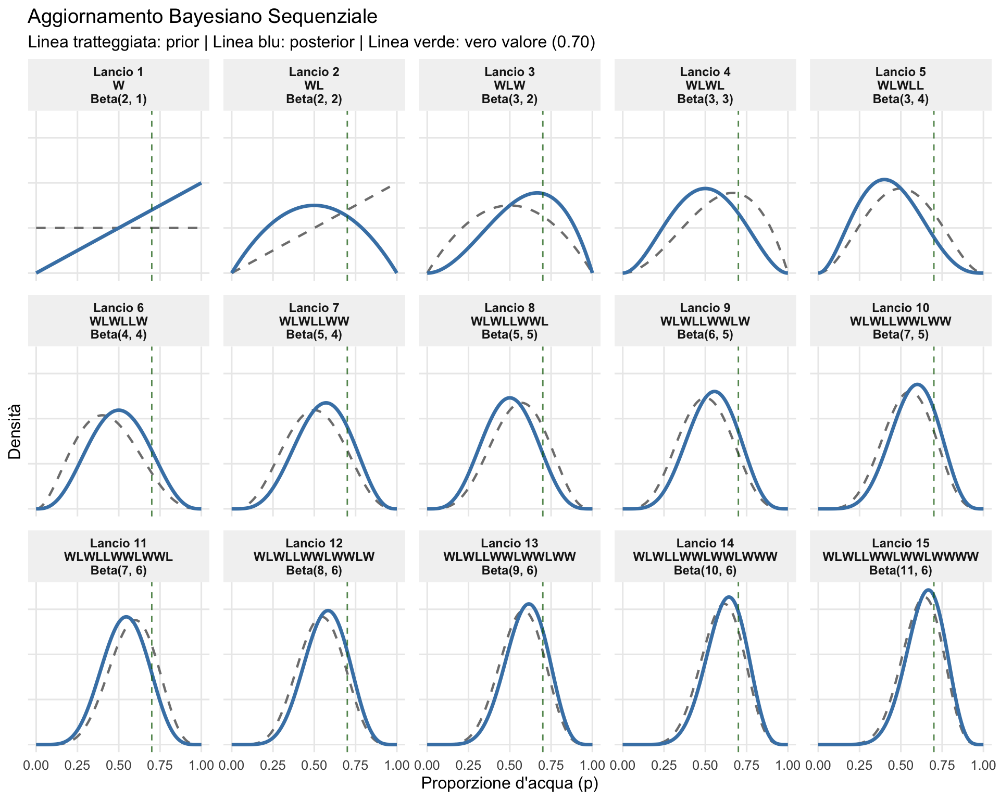
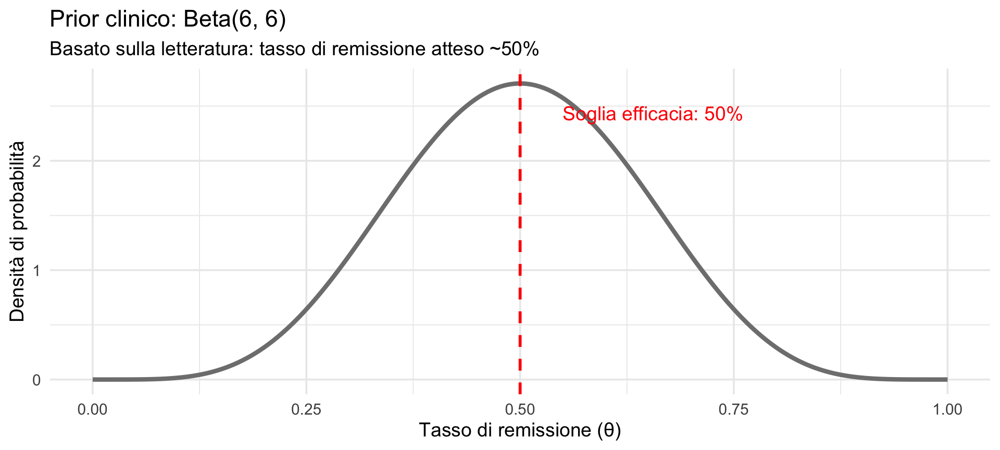
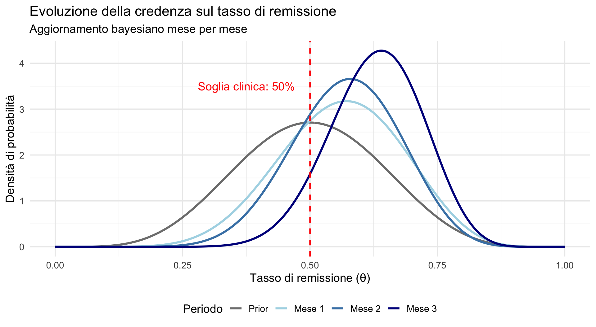

![]()
Sequenza osservata: W L W L L W W L W W L W W W WQuantificare e aggiornare l’incertezza
L’apprendimento sequenziale — Segmento 2
29 ottobre 2026
Obiettivi
- Implementare l’aggiornamento sequenziale in R.
- Visualizzare l’evoluzione delle credenze.
- Esplorare come le credenze convergono con più dati.
- Applicare il metodo a un caso clinico realistico.
Ripasso: il principio fondamentale
Dal segmento precedente…
Nel segmento precedente abbiamo stabilito che:
- il posterior dopo un’osservazione diventa il prior della successiva;
- l’ordine dei dati non cambia il risultato finale;
- l’apprendimento è graduale e cumulativo.
Ora vedremo come tradurre questa logica in R, e incontreremo uno strumento potente: la famiglia coniugata Beta-Binomiale.
Parte 1: l’esempio del globo (McElreath)
Il problema
Immaginate di avere un globo terrestre.
Domanda:
qual è la proporzione \(p\) di superficie coperta d’acqua?
Metodo:
- lanciamo il globo in aria;
- catturiamo con un dito un punto a caso;
- registriamo: Acqua (W) oppure Terra (L);
- ripetiamo e aggiorniamo la nostra credenza su \(p\).
Perché questo esempio?
È semplice ma illustra perfettamente l’apprendimento bayesiano:
- non conosciamo il vero valore di \(p\);
- ogni lancio ci dà un’informazione parziale;
- aggiorniamo progressivamente la nostra credenza.
In psicologia:
lo stesso principio vale per stimare la probabilità di successo di una terapia, l’accuratezza di un test, ecc.
Il modello statistico
Verosimiglianza: ogni lancio è una prova binomiale.
\[ \text{Dati} \sim \text{Binomiale}(N, p), \] dove
- \(N\) = numero totale di lanci;
- \(k\) = numero di volte che osserviamo Acqua (W).
La distribuzione a priori
Prior iniziale:
non sappiamo nulla → usiamo un prior uniforme.
\[ p \sim \text{Beta}(1, 1). \]
La Beta(1, 1) è una distribuzione piatta: tutti i valori di \(p\) da 0 a 1 sono ugualmente credibili a priori.
La magia della famiglia coniugata
Quando usiamo un prior Beta con una verosimiglianza binomiale, succede qualcosa di elegante: il posterior è ancora una distribuzione Beta.
\[ p \mid \text{dati} \sim \text{Beta}(\alpha + k, \;\; \beta + N - k), \] dove \(k\) = successi (Acqua), \(N - k\) = insuccessi (Terra).
Questa proprietà si chiama coniugazione: il prior e il posterior appartengono alla stessa famiglia di distribuzioni. Non è necessario calcolare integrali o fare approssimazioni a griglia — basta aggiornare due numeri.
Perché è importante?
Un enorme vantaggio computazionale:
- il posterior mantiene la stessa forma del prior;
- l’aggiornamento richiede solo operazioni semplici (somme);
- non è necessario calcolare integrali complessi.
Nella lezione precedente abbiamo usato l’approssimazione a griglia (101 punti, moltiplicazioni, normalizzazione). Con la famiglia coniugata, l’aggiornamento bayesiano si riduce a sommare conteggi.
La regola di aggiornamento
Partendo da un prior Beta(\(\alpha, \beta\)):
| Osservazione | Aggiornamento del prior |
|---|---|
| Acqua (W) | \(\alpha \leftarrow \alpha + 1\) |
| Terra (L) | \(\beta \leftarrow \beta + 1\) |
Ogni osservazione di Acqua incrementa \(\alpha\); ogni osservazione di Terra incrementa \(\beta\). L’inferenza bayesiana, in questo caso, si riduce a contare e aggiornare.
Esempio passo-passo
Partiamo da Beta(1, 1) e osserviamo la sequenza: W, W, L, W
| Lancio | Osservo | \(\alpha\) | \(\beta\) | Posterior |
|---|---|---|---|---|
| 0 (prior) | — | 1 | 1 | Beta(1, 1) |
| 1 | W | 2 | 1 | Beta(2, 1) |
| 2 | W | 3 | 1 | Beta(3, 1) |
| 3 | L | 3 | 2 | Beta(3, 2) |
| 4 | W | 4 | 2 | Beta(4, 2) |
Cosa significano questi numeri?
I parametri della Beta hanno un’interpretazione intuitiva:
- \(\alpha - 1\) = “conteggi di Acqua” (successi);
- \(\beta - 1\) = “conteggi di Terra” (insuccessi).
Dopo W, W, L, W:
- Beta(4, 2) significa: 3 Acqua + 1 Terra osservati (più i “conteggi virtuali” del prior).
La media del posterior
La media di una Beta(\(\alpha\), \(\beta\)) è:
\[ \text{Media} = \frac{\alpha}{\alpha + \beta}. \]
Dopo W, W, L, W con Beta(4, 2):
\[ \text{Media} = \frac{4}{4 + 2} = \frac{4}{6} \approx 0.67 \] che è vicino alla frequenza osservata (3/4 = 0.75), ma “tirato” leggermente verso il prior uniforme.
Visualizziamo l’aggiornamento
Simuliamo 15 lanci del globo (vera proporzione d’acqua = 70%):
Come leggere la figura seguente
Ogni pannello mostra l’evoluzione delle credenze:
- Curva grigia tratteggiata: il posterior del passo precedente (che diventa il prior attuale).
- Curva blu solida: il nuovo posterior dopo l’ultima osservazione.
- Linea verticale tratteggiata: il vero valore di \(p\) (0.70).
Osservate come la curva si sposta e diventa più stretta — meno incertezza ad ogni passo.

Cosa osserviamo nella figura?
Spostamento progressivo: la curva si sposta verso il vero valore (0.70).
Restringimento: la curva diventa sempre più stretta — meno incertezza.
Il prior “svanisce”: dopo poche osservazioni, il prior uniforme non ha più influenza.
Ogni osservazione conta: W sposta verso destra, L sposta verso sinistra.
Questo è lo stesso principio della consistenza asintotica che abbiamo visto nella lezione precedente — con abbastanza dati, il posterior converge verso il valore vero indipendentemente dal prior iniziale.
Il messaggio chiave
L’apprendimento bayesiano è l’accumulo razionale dell’evidenza.
Non buttiamo via le informazioni precedenti. Non ricominciamo da zero ad ogni osservazione. Ogni nuovo dato affina la nostra conoscenza.
Parte 2: applicazione clinica
Dal globo alla clinica
Lo stesso principio si applica a domande clinicamente rilevanti:
- Qual è il tasso di remissione di una nuova terapia?
- Quanto è accurato un test diagnostico?
- Qual è la probabilità di aderenza a un programma?
Vediamo un esempio concreto in cui l’aggiornamento sequenziale offre un vantaggio pratico rispetto all’approccio frequentista.
Scenario clinico
Una clinica sta valutando una nuova terapia cognitivo-comportamentale per la depressione.
Obiettivo: monitorare l’efficacia in tempo reale, aggiornando le credenze man mano che arrivano nuovi pazienti.
Domanda: qual è la probabilità che il tasso di remissione \(\theta\) sia superiore al 50%?
La conoscenza dalla letteratura (prior)
Prima di iniziare, cosa sappiamo?
- Meta-analisi suggeriscono tassi di remissione del 40-60% per terapie CBT.
- Scegliamo un prior Beta(6, 6): centrato su 0.50, con moderata incertezza.
[1] 0.5Il prior Beta(6, 6) è come dire: “Prima di vedere i dati, mi aspetto che circa il 50% dei pazienti migliori, ma non ne sono sicuro.”
Visualizziamo il prior clinico

I dati clinici (simulati)
I pazienti arrivano mese per mese:
Totale dopo 3 mesi: 11 remissioni su 15 pazienti (73%).
L’aggiornamento: una semplice funzione
Per aggiornare la Beta dopo aver osservato dei dati:
La funzione conta i successi e gli insuccessi, poi aggiorna i parametri — esattamente ciò che abbiamo fatto “a mano” nel segmento precedente.
Aggiornamento mese per mese
# Mese 1
parametri <- aggiorna_beta(alpha_corrente, beta_corrente, mese1)
alpha_corrente <- parametri$alpha
beta_corrente <- parametri$beta
cat("Mese 1:", sum(mese1), "remissioni su", length(mese1),
"→ Beta(", alpha_corrente, ",", beta_corrente, ")",
"| Media:", round(alpha_corrente/(alpha_corrente + beta_corrente), 3),
"\n")Mese 1: 3 remissioni su 4 → Beta( 9 , 7 ) | Media: 0.562 # Mese 2
parametri <- aggiorna_beta(alpha_corrente, beta_corrente, mese2)
alpha_corrente <- parametri$alpha
beta_corrente <- parametri$beta
cat("Mese 2:", sum(mese2), "remissioni su", length(mese2),
"→ Beta(", alpha_corrente, ",", beta_corrente, ")",
"| Media:", round(alpha_corrente/(alpha_corrente + beta_corrente), 3),
"\n")Mese 2: 3 remissioni su 5 → Beta( 12 , 9 ) | Media: 0.571 # Mese 3
parametri <- aggiorna_beta(alpha_corrente, beta_corrente, mese3)
alpha_corrente <- parametri$alpha
beta_corrente <- parametri$beta
cat("Mese 3:", sum(mese3), "remissioni su", length(mese3),
"→ Beta(", alpha_corrente, ",", beta_corrente, ")",
"| Media:", round(alpha_corrente/(alpha_corrente + beta_corrente), 3),
"\n")Mese 3: 5 remissioni su 6 → Beta( 17 , 10 ) | Media: 0.63 Riepilogo dell’aggiornamento
| Periodo | Nuovi pazienti | Remissioni | Posterior | Media | P(θ > 0.5) |
|---|---|---|---|---|---|
| Prior | — | — | Beta(6, 6) | 0.50 | 50% |
| Mese 1 | 4 | 3 | Beta(9, 7) | 0.56 | 69% |
| Mese 2 | 5 | 3 | Beta(12, 9) | 0.57 | 76% |
| Mese 3 | 6 | 5 | Beta(17, 10) | 0.63 | 93% |
Le credenze si spostano progressivamente verso valori più alti di \(\theta\).
Visualizzazione dell’aggiornamento

La domanda clinica cruciale
“Qual è la probabilità che la terapia sia efficace (\(\theta > 50\%\))?”
C’è il 93% di probabilità che il vero tasso di remissione sia superiore al 50%. La stima più probabile è circa il 63%.
Cosa sarebbe successo con il frequentismo?
Un ricercatore frequentista avrebbe dovuto fissare prima dello studio quanti pazienti arruolare, poi calcolare il valore-\(p\) una sola volta alla fine. Se avesse controllato i risultati ogni mese — come farebbe naturalmente un clinico — il tasso di falsi positivi sarebbe aumentato (il problema dell’optional stopping che abbiamo visto nella lezione 16).
Cosa sarebbe successo con il frequentismo?
L’approccio bayesiano non soffre di questo problema. Il clinico può legittimamente controllare i risultati dopo ogni mese, aggiornare le proprie credenze e prendere decisioni in tempo reale — senza violare alcuna assunzione statistica.
Questa è una differenza pratica enorme per chi lavora in contesti clinici.
Confronto: evoluzione della certezza
Prior: P(θ > 0.50) = 50 %Dopo Mese 1: P(θ > 0.50) = 69.6 %Dopo Mese 2: P(θ > 0.50) = 74.8 %Dopo Mese 3: P(θ > 0.50) = 91.6 %La certezza aumenta progressivamente con l’accumulo di evidenza.
Interpretazione per il clinico
Dati osservati: 11 remissioni su 15 pazienti (73%)
Conclusione bayesiana: c’è il 93% di probabilità che il vero tasso di remissione sia superiore al 50%, con una stima centrale di circa il 63%.
Raccomandazione: i dati supportano l’efficacia della terapia. Si può continuare il trattamento con fiducia e l’evidenza si rafforzerà ulteriormente con i prossimi pazienti — il posterior di oggi diventerà il prior di domani.
Riepilogo e percorso del corso
Il percorso fin qui
Lezioni 5-11 — Probabilità, distribuzioni, verosimiglianza.
Lezioni 14-16 — Inferenza frequentista e crisi di replicabilità.
Lezione 17 — I tre ingredienti: prior, verosimiglianza, posterior. La formula di Bayes. L’approssimazione a griglia.
Lezione 18 (oggi) — L’apprendimento sequenziale. La famiglia coniugata Beta-Binomiale. Monitoraggio clinico in tempo reale.
Nella prossima lezione approfondiremo le famiglie coniugate — non solo Beta-Binomiale, ma anche Normale-Normale — e vedremo come queste scorciatoie analitiche si collegano alla teoria.
Riepilogo
Il posterior diventa il prior: l’apprendimento è cumulativo.
Beta + Binomiale = Beta: l’aggiornamento richiede solo somme — niente griglie, niente integrali.
Monitoraggio in tempo reale: a differenza del frequentismo, possiamo controllare i risultati in qualsiasi momento senza gonfiare i falsi positivi.
Probabilità dirette: “C’è il 93% di probabilità che la terapia funzioni” è la risposta che il clinico cerca.
Per la prossima lezione
Materiale di studio: https://ccaudek.github.io/utet-companion/
Prossimo argomento:
“Distribuzioni coniugate: Beta-Binomiale, Normale-Normale.”
Vedremo come alcune combinazioni di prior e likelihood hanno soluzioni eleganti in forma chiusa — e perché questo ci sarà utile quando passeremo ai metodi computazionali.